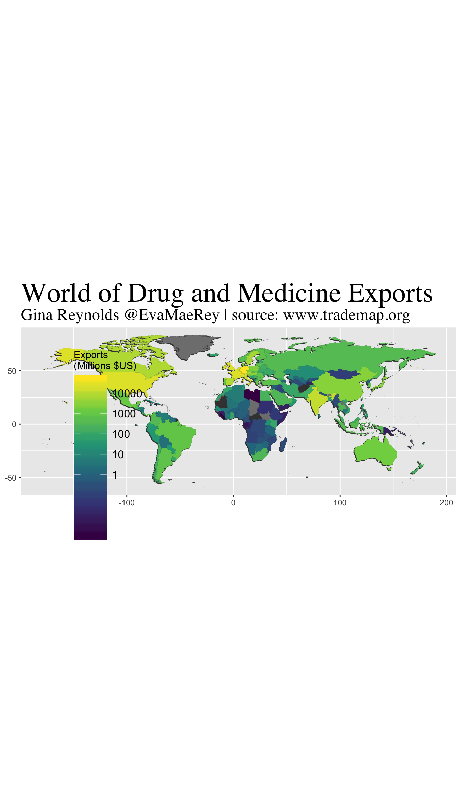

Chapter 18 Exports of Medicine
The data plotted for this challenge was simply total export volume of medicine (in dollars). I played with mapping for this week. I had fun with trying to create a shadow behind the continents, which I think makes the map look like some kind of a puzzle for children. I used the wonderful viridis package, which has many good properties for continuous variable plotting.
data <- readxl::read_xlsx("raw_data/Drug & Medicine Exports.xlsx") %>%
mutate(`Exports (USD millions)` = `Exports (USD)` / 1000000) %>%
select(-`Exports (USD)`) %>%
mutate(CountryName = countrycode::countrycode(Exporter, "country.name", "country.name"))
data %>% group_by(Year) %>% tally()## # A tibble: 5 x 2
## Year n
## <dbl> <int>
## 1 2013 220
## 2 2014 220
## 3 2015 220
## 4 2016 220
## 5 2017 220data_wide <- data %>% spread(key = Year, value = `Exports (USD millions)`)
country <- data %>%
group_by(Exporter) %>%
summarise(mean_exports = mean(`Exports (USD millions)`, na.rm = T)) %>%
arrange(desc(mean_exports))
# Mapping data
world_map_df <- map_data("world") %>%
mutate(CountryName = countrycode::countrycode(region, "country.name", "country.name")) %>%
filter(region != "Antarctica")
CountriesWorldMap <- world_map_df %>% group_by(CountryName, region) %>% summarise()
data_world_map <- world_map_df %>% full_join(data)
max(data$`Exports (USD millions)`, na.rm = T)## [1] 340518.1# plot map
ggplot() +
geom_polygon(
data = data_world_map,
aes(long - .7, lat - .7, group = group), fill = "grey25"
) +
geom_polygon(
data = data_world_map,
aes(long - .6, lat - .6, group = group), fill = "grey25"
) +
geom_polygon(
data = data_world_map,
aes(long - .5, lat - .5, group = group), fill = "grey25"
) +
geom_polygon(
data = data_world_map,
aes(long - .3, lat - .3, group = group), fill = "grey25"
) +
geom_polygon(
data = data_world_map,
aes(long - .4, lat - .4, group = group), fill = "grey25"
) +
geom_polygon(
data = data_world_map,
aes(long - .2, lat - .2, group = group), fill = "grey25"
) +
geom_polygon(
data = data_world_map,
aes(long - .1, lat - .1, group = group), fill = "grey25"
) +
geom_polygon(
data = data_world_map %>%
filter(Year == 2016) %>%
filter(Exporter != "World"),
aes(long, lat,
group = group,
fill = `Exports (USD millions)`
)
) +
coord_equal() +
ggtitle(
"World of Drug and Medicine Exports",
"Gina Reynolds @EvaMaeRey | source: www.trademap.org"
) +
scale_fill_viridis_c(
name = "Exports \n(Millions $US)",
trans = "log10",
breaks = c(1, 10, 100, 1000, 10000, 100000)
) +
theme(
axis.title.x = element_blank(),
axis.title.y = element_blank(),
plot.title = element_text(size = 30, family = "Times"),
plot.subtitle = element_text(size = 18, family = "Times"),
legend.position = c(.2, .3), legend.text = element_text(size = 12),
legend.key.size = unit(0.5, "in"),
legend.background = element_rect(fill = alpha("blue", 0))
)